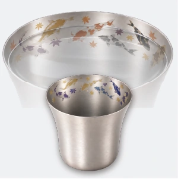
舞う落葉に錦鯉が泳ぐ
落葉と錦鯉
¥12,500（税込）
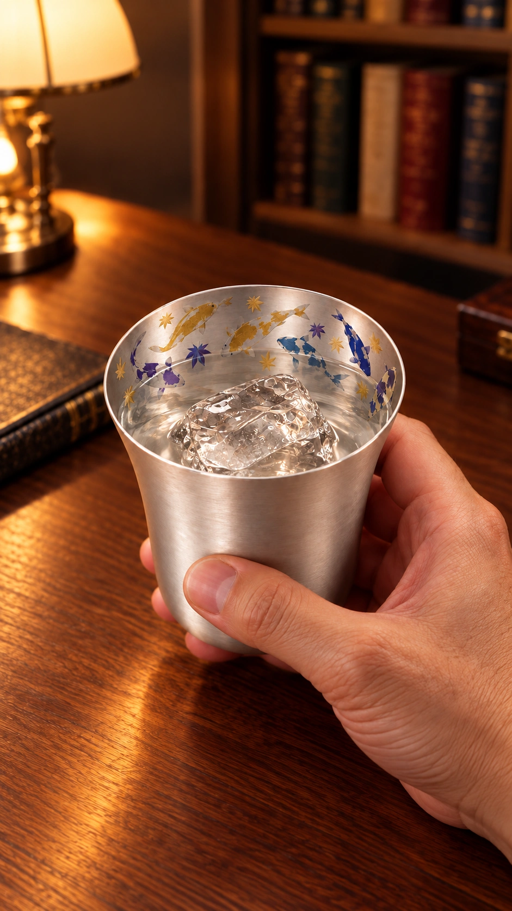
超軽量毎日眺めたくなる器を、店頭で見つける。
CoCoLo新潟 2F
2026.10.30 OPEN
燕三条・純チタン製品取り扱い店【燕彩】
※先着順・お一人様1個、無くなり次第終了
CRAFTSMANSHIP
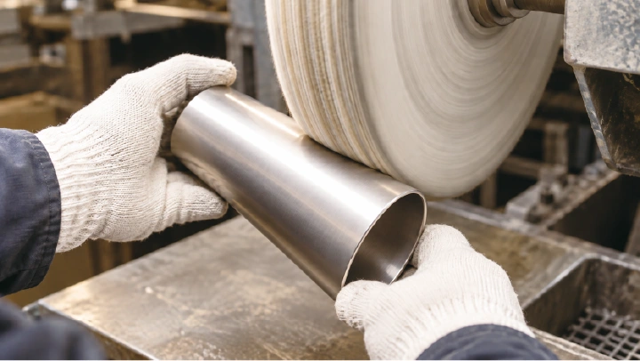
軽くて丈夫なチタンは、加工が難しい素材。
燕三条の職人が回転速度や力加減を見極め、
繊細な調整で美しいかたちに仕上げます。
DESIGN
一杯を味わいながら、
揺らぐ水面と繊細な絵柄が織り成す景色を楽しむ。
毎日の一杯に、純チタンの器「宴」を。
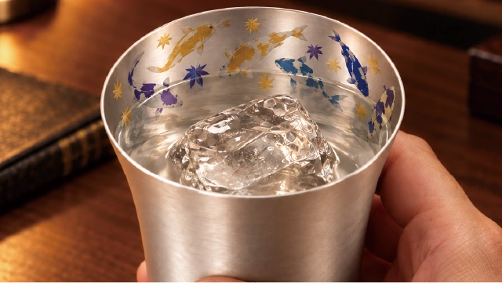
FIND YOUR FAVORITE
眺める時間も、味わう時間も軽やかに。好きな景色で。
ensai TITANIUM 純チタン製／各種350ml

舞う落葉に錦鯉が泳ぐ
¥12,500（税込）
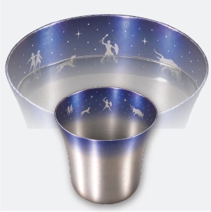
冬の夜空に星座が輝く
¥14,000（税込）
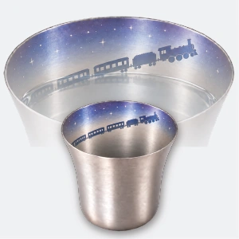
星の海を列車が駆ける
¥13,000（税込）
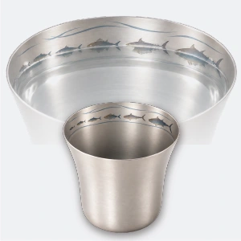
日本海に魚たちが躍る
¥12,500（税込）
3D VIEW
絵柄や水の状態を切り替えて、ドラッグで回せます。
MADE FOR EVERYDAY
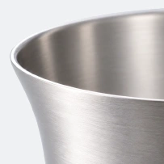
手作業による丁寧な研磨。
複数の作業工程を経て、
金属を感じさせない飲み口に。
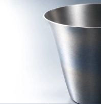
350mlで、約52gの軽さ。
丈夫で長持ちし、錆びにくく、
匂い移りが少ない素材です。
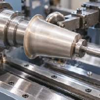
成形、研磨、発色。
それぞれの工程で精度を追求し、
美しさと使い心地を整えます。
※約52gは350mlシングルタンブラーの仕様です。
※本体は、純チタン製
ブルーマウンテンシリーズ
憩いを彩る、山の青。
お気に入りの器で、いつもの晩酌をアウトドア気分に。
ensai TITANIUM 純チタン製／各種350ml
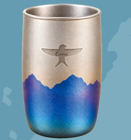
¥16,000（税込）
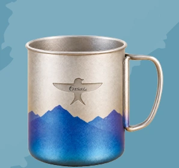
¥8,000（税込）
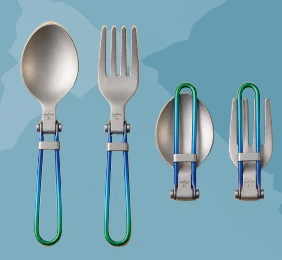
¥3,800（税込）
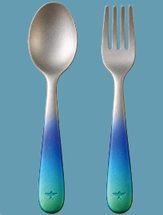
¥1,980（税込）
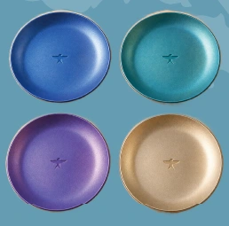
各¥1,980（税込）
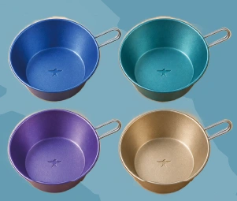
各¥2,400（税込）
MORE TITANIUM
店頭で、純チタンの軽さをご体感ください。
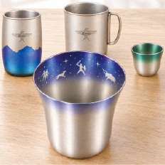
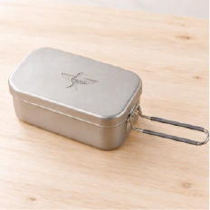
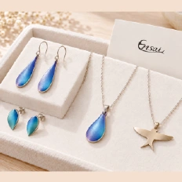
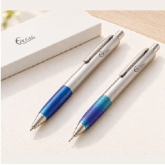
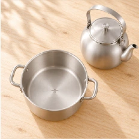
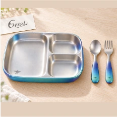
GACHA
店頭では、全8色の純チタン製目印チャームの
ガチャを設置しています（1回400円）
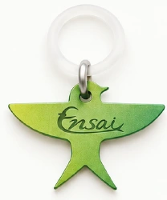
約1g
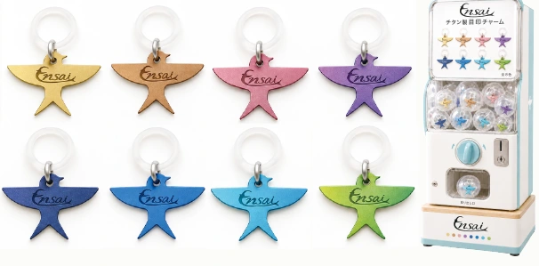
※先着順・お一人様1個、無くなり次第終了
VISIT US
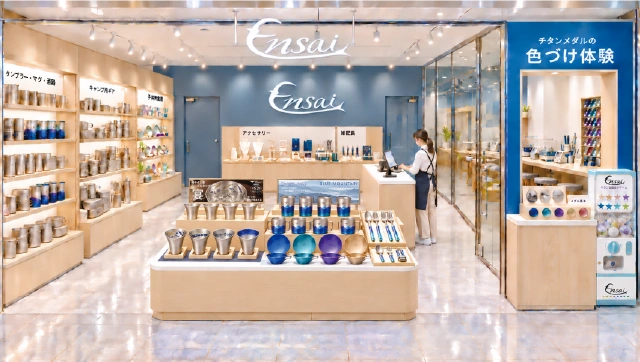
CoCoLo新潟2F
手に取るとわかる、純チタンの軽さ。
器や暮らしの道具を、店頭でみつけてください。
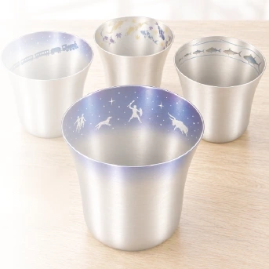
TITANIUM COLOR EXPERIENCE
純チタンメダルの色づけ体験コーナーを常設。
青色のカウンターにてお申し込みください。
【体験料：800円（税込）／体験時間：約15分】
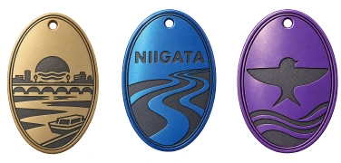
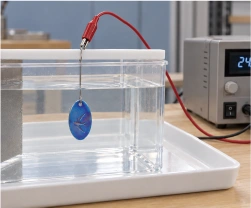
新潟の旅の記念に。
好きな色で仕上げる、自分だけの一枚を。